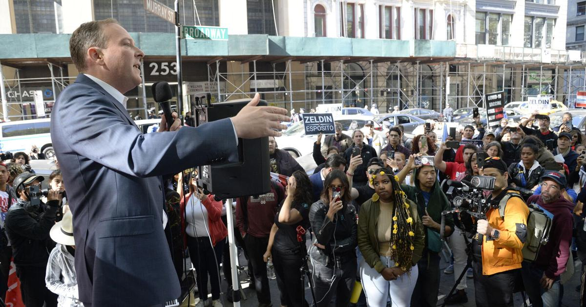

'This Is What a Red Wave Looks Like': Republicans Drive Up Turnout in Southern Brooklyn
By Nicholas Morgan
Dec. 19, 2022
The Republican Party did not see the massive “red wave” on Election Day that they hoped would lead them to controlling Congress, a welcome relief for nervous Democrats nationwide. Despite falling below expectations elsewhere, the Republican wave did make landfall in the Democrats’ backyard: southern Brooklyn.
On election night on Nov. 8, three Democratic incumbents in the New York State Assembly were ousted from their seats by Republican challengers. Further afield, the Democrats lost two congressional seats in Long Island and a further two seats in the Hudson Valley, including the seat held by Democratic Congressional Campaign Committee chief Rep. Sean Patrick Maloney.
For Republicans, their victories in southern Brooklyn were secured by a strong performance by their candidate for governor, Rep. Lee Zeldin from Long Island. Zeldin was defeated in the end by incumbent Gov. Kathy Hochul, but he still secured 47.1% of the statewide vote to Hochul’s 52.9%. This was a notable improvement from Republican Marc Molinaro’s challenge to then-Gov. Andrew Cuomo in 2018, which saw Molinaro secure 36.2% of the total vote to Cuomo's 59.6%.
Southern Brooklyn, stretching counterclockwise from Borough Park to Sheepshead Bay, proved to be important for Zeldin. In most of the election districts that make-up this area, Zeldin pushed up the margins won by Molinaro. In total, Zeldin secured more than twice the amount of voters in Brooklyn with 28.5% support compared to Molinaro’s paltry 13.5%.
For some in the Democratic Party, blame for these losses lie at the feet of the Brooklyn county party. Mikael Haxby, the vice president of organizing for the New Kings Democratic Party, said Republicans drove up their turnout, but not that this was not a “surge”. Instead, Haxby said it was indicative of a better organizing effort by Republicans and a failure by Brooklyn Democrats to motivate their own voters to the polls.
"There was not like a big conservative turnout surge, but a huge swing of votes to the GOP," said Haxby. "What we saw in New York is what a red wave looks like."